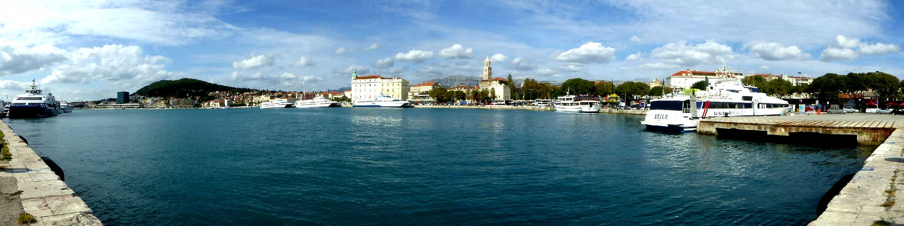
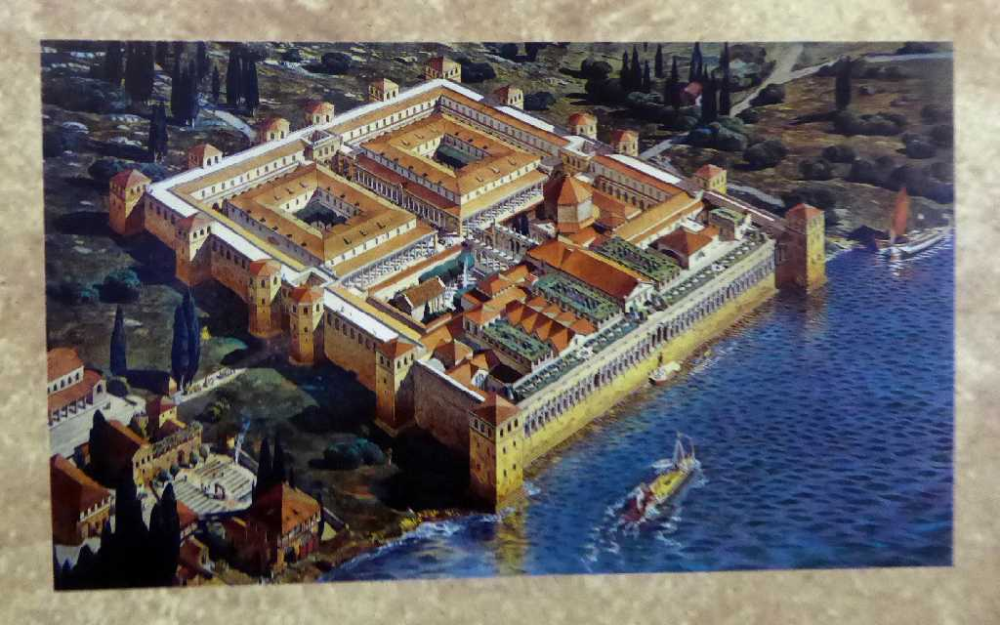
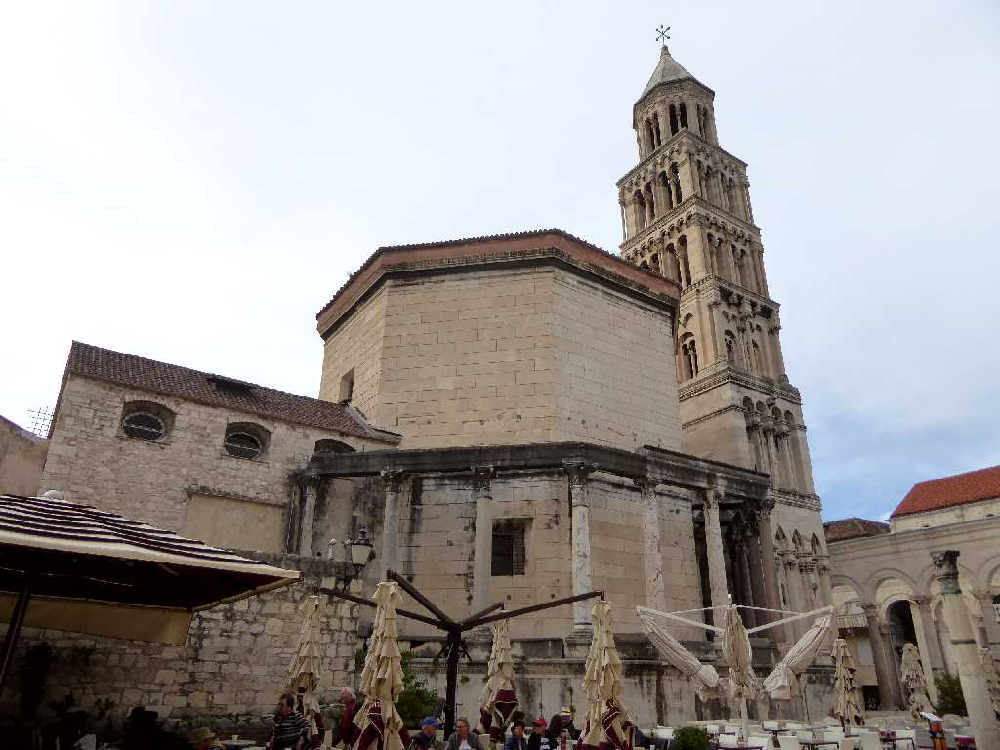
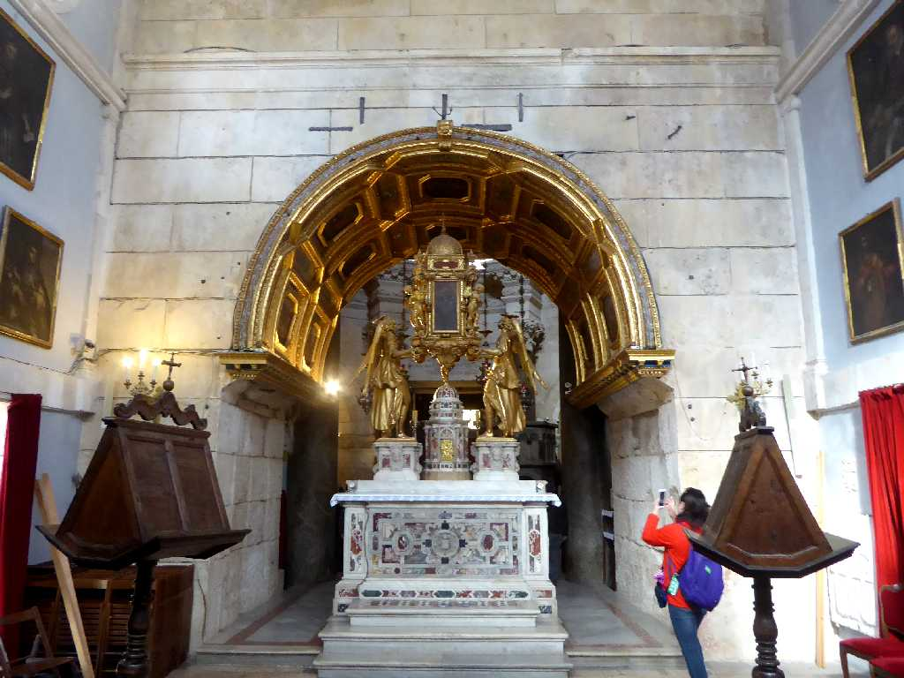
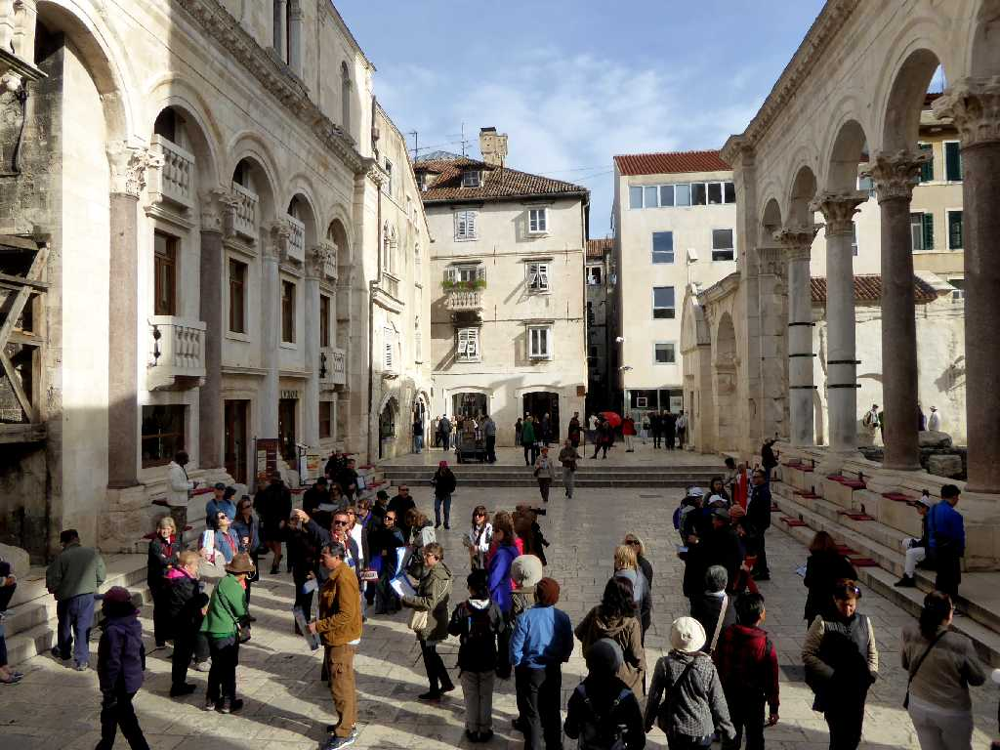
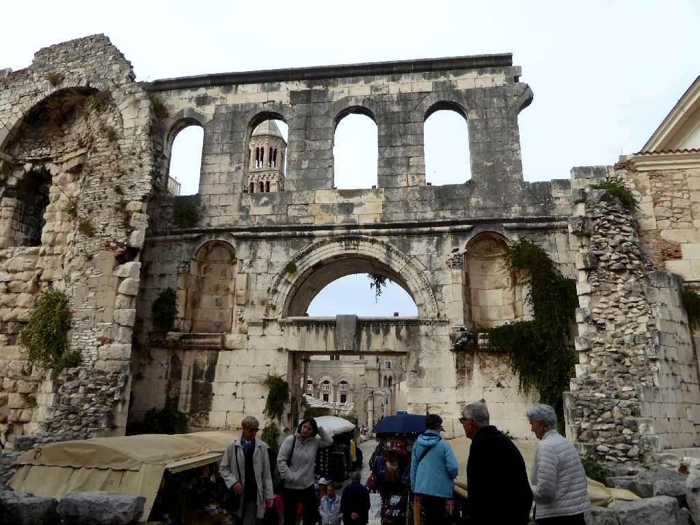
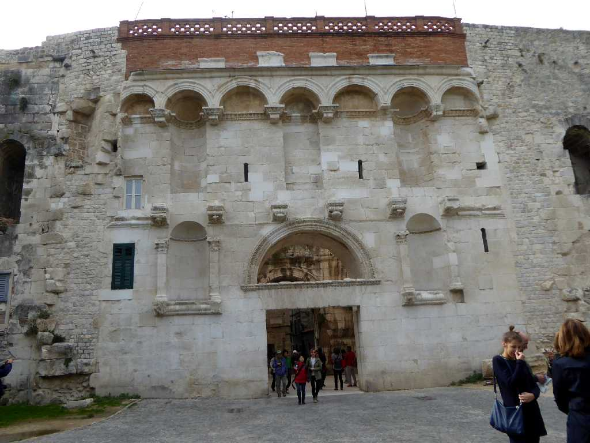
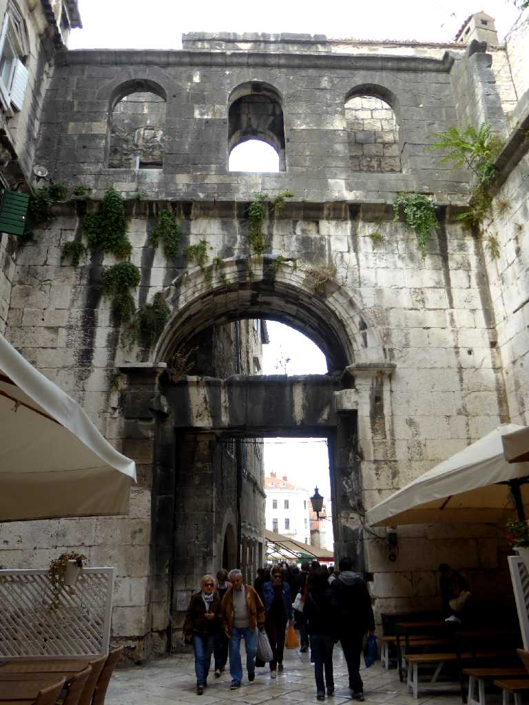
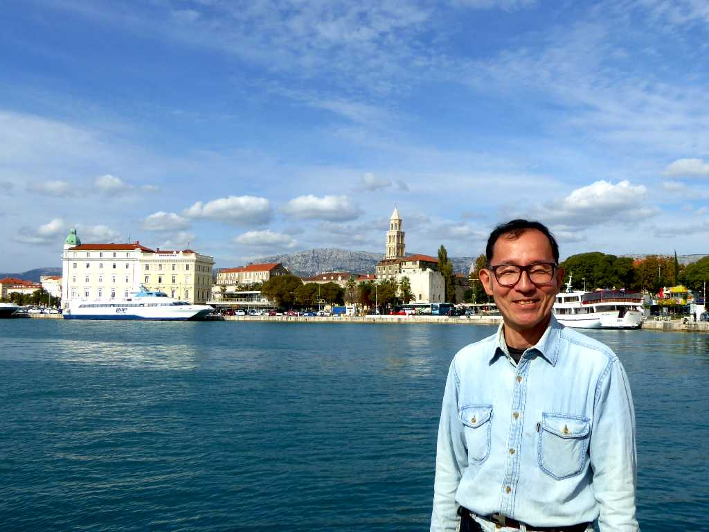

Split
ギリシャ人の交易都市にローマ皇帝ディオクレティアヌスが２９５〜３０５年宮殿を造営して栄えた街スプリット

Dioklecijanova palača
ローマ皇帝ディオクレティアヌスが３０５年に引退後３１１年まで余生を過ごしたディオクレティアヌス宮殿

Katedrala Svetog Duje
３０６年に創られたローマ皇帝ディオクレティアヌスの霊廟を４〜７世紀にロマネスク様式でカトリック大聖堂に改築した聖ドムニウス大聖堂

Oltar Katedrala Svetog Duje

Trg Peristil Dioklecijanova palača

Srebrna vrata
銀の門は宮殿の東門

Zlatna vrata
金の門は宮殿の北門

Željezna vrata
鉄の門は宮殿の西門

October 13 2016 Split